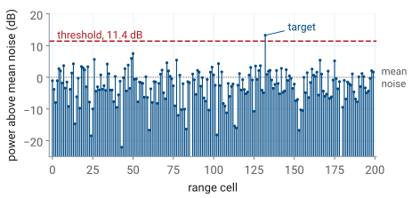
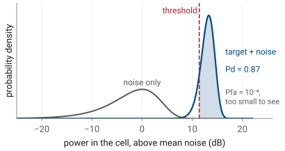
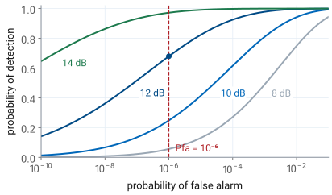
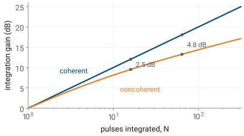
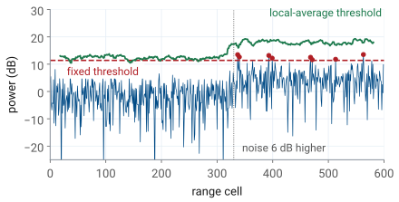

L27 - Radar Detection#
Radar Detection
A steady target needs 13.1 dB of SNR for a 90% chance of detection at one false alarm in a million.
Lesson 27 · Antennas, Phased Arrays, and Radar Systems · Dr. Neil Rogers
Printing
To print the slides, switch to present mode and print: one slide a sheet, with room for notes. Print from read mode for the whole lesson.
Learning Objectives
- I can apply radar detection theory (PD, FAR, dwell time) to determine detection performance under noise.
Lesson 25 gave us the received power from a target and the noise power it competes with, and Lesson 26 divided the return into range and Doppler cells. Neither one tells us whether the radar reports a target. That is a decision the processor makes in every cell, many thousands of times a second, and every one of those decisions is made against noise. Today we work out how often it decides correctly, how often it reports a target that is not there, and how much signal-to-noise ratio (SNR) a given performance requires.
A Detection Is a Decision
Every range cell holds noise, and some also hold a target.
The processor compares the power in each cell with a threshold.
Above the threshold it reports a target; below, nothing.

The figure is one range profile, the power in each of 200 range cells after the range FFT, plotted in dB above the mean noise power. Most cells hold only receiver noise, and the noise is random: from cell to cell it spreads over more than 25 dB. One cell also holds a target 13 dB above the mean noise.
The processor does not know which cell holds the target. It applies one rule to every cell: if the power exceeds a threshold \(T\), report a target; otherwise report nothing. The threshold here sits 11.4 dB above the mean noise, and the target is the only cell that crosses it.
Two errors are possible. A cell holding only noise can cross the threshold, which is a false alarm. A cell holding a target can fall below it, which is a missed detection. Raising the threshold makes the first error rarer and the second more common, and no threshold removes both. Detection theory puts numbers on both errors so that we can choose the threshold on purpose.
Noise Power in One Cell
\(z\) is the power in one cell; \(P_n\) is its mean.
Small values are common; large values are rare but never impossible.
Receiver noise at the ADC is a complex Gaussian voltage: its in-phase and quadrature parts are independent, zero-mean Gaussian random variables. A square-law detector forms the power \(z = \vert x\vert^2\), and the sum of the squares of two independent Gaussians is exponentially distributed:
The one parameter is the mean noise power \(P_n\), which Lesson 25 wrote as \(kT_\text{sys}B\) for a receiver of system noise temperature \(T_\text{sys}\) and bandwidth \(B\). The amplitude \(\vert x\vert\) has the Rayleigh distribution, and engineers often say the same thing as “the noise envelope is Rayleigh.”
The exponential density is largest at \(z = 0\) and falls off steadily. That is why the profile on the previous frame has many cells far below the mean and a few well above it: a cell 7 dB above the mean, five times \(P_n\), occurs with probability \(e^{-5} = 0.7\%\), so in 200 cells we expect one or two of them.
Probability of False Alarm
\(P_{fa} = 10^{-6}\) puts the threshold \(13.8 P_n\), or 11.4 dB, above the mean noise.
The probability of false alarm \(P_{fa}\) is the probability that a cell holding only noise crosses the threshold. It is the area of the noise density above \(T\):
Inverting it gives the threshold for a chosen \(P_{fa}\),
For \(P_{fa} = 10^{-6}\), \(T/P_n = \ln 10^{6} = 13.8\), which is \(10\log_{10} 13.8 = 11.4\) dB above the mean noise. That is the dashed line in the range profile. The logarithm makes the threshold insensitive to the choice: \(P_{fa} = 10^{-3}\) needs 8.4 dB and \(P_{fa} = 10^{-8}\) needs 12.7 dB. A thousandfold change in false alarms moves the threshold by only a few dB, which matters later in the lesson, because the reverse is also true: a few dB of error in the threshold changes the false alarms a thousandfold.
Two assumptions are built in. The threshold is set relative to \(P_n\), so the processor must know the noise power. And the cells are independent, so the probabilities for many cells multiply and add in the simple ways used below.
Target Plus Noise

\(P_d\) is the area of the target-plus-noise density above \(T\).
At 13 dB SNR and \(P_{fa} = 10^{-6}\), \(P_d = 0.87\).
When the cell also holds a steady target of power \(P_s\), the target adds a fixed phasor to the noise voltage. The power then follows a Rician distribution, centered near \(P_s + P_n\), and the probability of detection \(P_d\) is its area above the threshold. With the SNR written \(\text{SNR} = P_s/P_n\), that area is
where \(Q_1\) is the Marcum Q-function. It has no closed form, but scipy evaluates it as the survival function of a noncentral chi-square: scipy.stats.ncx2.sf(2*T/Pn, 2, 2*SNR).
The figure draws both densities against the power in the cell in dB, which is how the range profile showed them. The noise density is the broad hump at 0 dB. The target-plus-noise density for 13 dB SNR is the narrow peak near 13 dB, narrower because the steady target dominates the random part. With the threshold at 11.4 dB, 87% of the target density lies above it, so \(P_d = 0.87\). The noise tail above the threshold is \(10^{-6}\) of its area, far too small to draw, and that is the point of choosing it there.
Threshold Explorer
The widget draws the two densities and the threshold, and beside them the probability of detection against the probability of false alarm, with the present operating point marked. Move the threshold and watch the two shaded areas trade. Raise the target SNR and the target density moves away from the noise. The pulse and noise controls belong to the second half of the lesson: integrating \(N\) pulses coherently moves the target density up by \(10\log_{10}N\) dB, and the noise control raises the noise while the threshold stays where it was set.
Pd Against Pfa

A lower threshold raises \(P_d\) and \(P_{fa}\) together.
At \(P_{fa} = 10^{-6}\), 12 dB gives \(P_d = 0.68\); 14 dB gives 0.97.
Only more SNR raises \(P_d\) without raising \(P_{fa}\).
Each curve fixes the SNR and sweeps the threshold. Moving the threshold down moves the operating point up and to the right along its curve: more detections and more false alarms, always together. This curve is the receiver operating characteristic, and it is the complete statement of what a detector can do at one SNR.
The curves also show how steeply detection depends on SNR. At \(P_{fa} = 10^{-6}\), 8 dB of SNR gives \(P_d = 0.06\), 12 dB gives 0.68, and 14 dB gives 0.97. Between 10 and 14 dB, each decibel moves \(P_d\) by 0.1 to 0.2. The threshold sets which error we accept; only the SNR decides how small both can be at once.
False-Alarm Rate
\(512 \times 256\) cells every 128 ms is \(1.0 \times 10^{6}\) decisions a second.
At \(P_{fa} = 10^{-6}\), \(\text{FAR} = 1.0\) a second: one false target every second.
\(P_{fa}\) is a probability per decision. What an operator sees, and what a tracker downstream must cope with, is the false-alarm rate: false reports per second. Every cell tested is one decision, so
Consider the range-Doppler burst the L29–L31 Labs use: 256 chirps at a pulse repetition interval (PRI) of 0.5 ms, so a new map every 128 ms, and say 512 range cells in each map. That is \(512 \times 256 = 131\,072\) decisions per map and \(131\,072/0.128\ \text{s} = 1.0 \times 10^{6}\) decisions per second. At \(P_{fa} = 10^{-6}\) the radar reports about one false target every second, which is too many for a display and far too many for a tracker.
Working backward is the usual design step. A specification of one false alarm per minute requires
which puts the threshold at \(\ln(6.1 \times 10^{7}) = 17.9\), or 12.5 dB above the mean noise. The faster a radar tests cells, the smaller \(P_{fa}\) must be for the same false-alarm rate. We specify a rate and set the threshold from the probability.
Albersheim’s Equation
\(P_d = 0.9\), \(P_{fa} = 10^{-6}\): \(\text{SNR} = 13.1\) dB.
The Marcum Q-function answers the forward question: given an SNR and a threshold, what is \(P_d\)? The design question runs the other way: given the \(P_d\) and \(P_{fa}\) a mission requires, what SNR must the radar equation deliver? Albersheim’s equation is an empirical fit that answers it directly for a steady target:
For \(P_d = 0.9\) and \(P_{fa} = 10^{-6}\), \(A = \ln(6.2 \times 10^{5}) = 13.34\) and \(B = \ln 9 = 2.20\), so
The fit holds to within about 0.2 dB for \(10^{-7} \le P_{fa} \le 10^{-3}\) and \(0.1 \le P_d \le 0.9\), and it stays close a little beyond. The table shows how the requirement moves. Asking for \(P_d = 0.99\) instead of 0.9 costs about 1.5 dB; asking for a hundred times fewer false alarms costs about 1 dB.
\(P_d\) |
\(P_{fa} = 10^{-4}\) |
\(P_{fa} = 10^{-6}\) |
\(P_{fa} = 10^{-8}\) |
|---|---|---|---|
0.5 |
9.4 dB |
11.2 dB |
12.5 dB |
0.9 |
11.7 dB |
13.1 dB |
14.2 dB |
0.99 |
13.3 dB |
14.5 dB |
15.5 dB |
Note
These numbers are for a steady target, one whose echo has the same amplitude on every look. Most real targets fluctuate as they turn, because their scatterers add with changing phases (the radar cross section of Lesson 25 is an average). For a target that fluctuates from one look to the next with an exponential power distribution, Swerling’s first case, \(P_d = P_{fa}^{1/(1 + \text{SNR})}\), and \(P_d = 0.9\) at \(P_{fa} = 10^{-6}\) needs 21.1 dB, 8 dB more than the steady target. The fades are what cost the extra SNR.
Required SNR Sets the Range
SNR falls as \(R^{-4}\), so 12 dB of extra SNR doubles the range.
A target at 20 dB SNR at 100 m meets \(P_d = 0.9\) out to 149 m.
The radar equation of Lesson 25 gives the received power as \(1/R^4\): the Friis spreading loss of Lesson 2, once out to the target and once back. The noise does not depend on range, so the SNR falls as \(R^{-4}\) too. If a target gives \(\text{SNR}_0\) at range \(R_0\), the range at which it just meets the requirement is
A target measured at 20 dB SNR at 100 m has \(20 - 13.1 = 6.9\) dB to spare against \(P_d = 0.9\), \(P_{fa} = 10^{-6}\), so \(R_\text{max} = 100\ \text{m} \times 10^{6.9/40} = 149\) m. The fourth root is a hard limit: doubling the range requires 16 times the SNR, 12 dB. That makes every decibel of SNR the processor can recover without a bigger transmitter or antenna valuable, which is the subject of the rest of the lesson.
Integrating Pulses
\(N = 256\) chirps give 24.1 dB, so each chirp needs only \(13.1 - 24.1 = -11.0\) dB.
The cost is the dwell time \(T_\text{d}\).
A radar does not have to decide on one pulse. If it keeps looking at the same cell for \(N\) pulses (chirps, on the PHASER) and adds the returns before thresholding, the target’s echoes add in phase while the noise samples, independent from pulse to pulse, add in power. The signal voltage grows as \(N\), so its power grows as \(N^2\); the noise power grows as \(N\); and the SNR grows as \(N\):
That is coherent integration. With the \(N = 256\) chirps of the L29–L31 burst the gain is \(10\log_{10}256 = 24.1\) dB, so a single chirp at −11.0 dB SNR, invisible on its own, integrates to the 13.1 dB a 90% detection needs. By the fourth-root rule of the last frame, the same gain extends the detection range by \(256^{1/4} = 4.0\) times.
The price is time. The radar must stay on the cell for the dwell time
where \(T_c\) is the time between chirps, the PRI. With a chirp every 0.5 ms, 256 chirps take 128 ms. The FFT is already doing this work: the range FFT adds the samples within one chirp coherently, and the Doppler FFT of Lesson 26 adds the chirps coherently, each Doppler bin compensating the phase that a target of that velocity advances from chirp to chirp.
Coherent Versus Noncoherent

Coherent adds the phasors; noncoherent adds the powers.
Noncoherent integration loses 2.5 dB at \(N = 16\) and 4.8 dB at \(N = 64\).
Coherent integration requires that the radar know how the target’s phase changes from pulse to pulse, which a Doppler FFT supplies. When the phase is unknown or unstable, the radar can still add the powers \(\vert x\vert^2\) from \(N\) pulses and threshold the sum. That is noncoherent integration. It discards the phase, and squaring each return before adding creates cross terms between the target and the noise, so the gain falls short of \(N\).
Albersheim’s equation covers it. For \(N\) pulses integrated noncoherently, the required SNR per pulse is
which reduces to the single-pulse form at \(N = 1\). For \(P_d = 0.9\) and \(P_{fa} = 10^{-6}\), 16 pulses need 3.6 dB each, a gain of 9.5 dB where coherent integration gives 12.0 dB; 64 pulses need −0.1 dB each, a gain of 13.3 dB against 18.1 dB. The gap grows with \(N\), so a radar integrates coherently whenever it can and adds powers only across looks it cannot phase-align, such as two different dwells.
What Limits the Dwell
The target must stay in one range cell: \(T_\text{d} < \Delta R / v\).
At 0.30 m and 1.5 m/s, that is 0.2 s.
A longer dwell also refreshes the map, and the track, less often.
More pulses always give more SNR, so something else must cap the dwell. Three things do.
The first is the target’s motion. Integration assumes the target stays in one range cell for the whole dwell. A walking person at \(v = 1.5\) m/s, seen with the \(\Delta R = c/2B = 0.30\) m resolution of a 500 MHz chirp, crosses a cell in
so at a PRI of 0.5 ms the useful dwell is at most about 400 chirps. The burst’s 128 ms dwell fits: the person moves 0.19 m during it. A longer dwell smears the target across cells, and the energy that should add in one cell spreads among several.
The second is the update rate. A radar that dwells 0.2 s on each of 20 beam positions revisits each one every 4 s. A tracker needs fresh detections often enough to follow a maneuver, and the scan has to finish.
The third works in our favor. The dwell also sets the Doppler resolution, \(\Delta f_D = 1/T_\text{d}\), as Lesson 26 showed: 128 ms gives 7.8 Hz, which is 0.12 m/s at the 3.0 cm wavelength of a 10 GHz carrier. Choosing \(N\) is therefore one decision with three consequences: the SNR gain, the velocity resolution, and how stale the picture is.
Detection on the PHASER
The range FFT integrates the samples within each chirp.
The Doppler FFT integrates the chirps in a dwell.
The threshold then tests each cell of the range-Doppler map.
The PHASER’s FMCW mode follows the chain of this lesson in order. Each chirp sweeps 500 MHz at a 10 GHz carrier, 0.5 ms long for the range work of the L28 Lab and 300 µs, repeated every 0.5 ms, in the 256-chirp burst of the L29–L31 Labs; the board returns the beat signal for each chirp as a block of samples. The range FFT of those samples is coherent integration over one chirp: a target at a fixed range is a fixed beat frequency, and the FFT adds its samples in phase. Stacking the range profiles of \(N\) chirps and taking a second FFT across them, the Doppler FFT, is coherent integration over the dwell. The result is the range-Doppler map, and the detector tests every cell of it against a threshold.
The L28 Lab builds the first stage and the L29 Lab the second. The numbers this lesson uses, \(P_{fa}\), the threshold above the noise, the integration gain, and the dwell, are the quantities to report when you explain what your own maps can detect. The ADI FMCW lab describes the waveform and the example settings.
A Fixed Threshold Fails

3 dB more noise turns \(P_{fa} = 10^{-6}\) into \(10^{-3}\).
Raising \(T\) for the worst case drops \(P_d\) in quiet noise from 0.89 to 0.17.
Every number so far assumed that the processor knows \(P_n\). A real noise floor moves: the receiver warms up, another emitter shares the band, rain or ground clutter fills some cells and not others. We set the threshold as \(T = P_n\ln(1/P_{fa})\), and if the noise rises by a factor \(g\) while \(T\) stays put,
A 3 dB rise, \(g = 2\), turns \(10^{-6}\) into \(10^{-3}\). At the \(1.0 \times 10^{6}\) decisions per second of the false-alarm frame, the display goes from one false target a second to about 1000 a second. The figure shows the effect with a 6 dB rise, \(P_{fa}' = 0.03\): noise never crosses the fixed threshold in the first 330 cells and crosses it eight times beyond them.
Setting the threshold for the worst noise does not help either. A threshold 3 dB higher keeps the false alarms in check when the noise is high, but when the noise is at its normal level that threshold corresponds to \(P_{fa} = 10^{-12}\), and a target at 13.1 dB SNR, which the original threshold detected with \(P_d = 0.89\), now has \(P_d = 0.17\). A fixed threshold trades false alarms in noisy cells against missed targets in quiet ones, and the widget’s noise control shows both.
Measure the Noise Where You Test
\(\hat{P}_n\) is the average of the cells around the cell under test.
The threshold follows the local noise, and \(P_{fa}\) stays fixed.
This is CFAR, the subject of Lesson 30.
The remedy is to stop assuming \(P_n\) and measure it. For each cell under test, the processor averages the power in a set of reference cells around it, skips a few guard cells next to it so the target’s own energy does not leak into the estimate, and sets the threshold as a multiple of that local average:
Where the noise is 6 dB higher, \(\hat{P}_n\) is 6 dB higher and so is the threshold, so the probability of false alarm stays at its design value everywhere. That property gives the method its name, constant false-alarm rate (CFAR) detection, and it is the green line in the previous figure. Because \(\hat{P}_n\) is itself an estimate from a finite number of cells, \(\alpha\) is somewhat larger than \(\ln(1/P_{fa})\), and the radar needs a fraction of a decibel to a decibel or so more SNR than with a known noise power. Lesson 30 derives \(\alpha\) and the L30 Lab runs CFAR on your own range-Doppler maps; ADI’s CFAR lab uses the same guard cells, reference cells, and bias.
Summary
Symbol / idea |
What it is |
Number to remember |
|---|---|---|
\(p(z) = e^{-z/P_n}/P_n\) |
noise power in one cell, exponential |
mean \(P_n = kT_\text{sys}B\) |
\(P_{fa} = e^{-T/P_n}\) |
probability of false alarm |
\(10^{-6}\) at \(T = 13.8P_n\), 11.4 dB |
\(P_d\) |
target-plus-noise area above \(T\) (Marcum Q) |
0.87 at 13 dB, \(P_{fa} = 10^{-6}\) |
FAR |
\(P_{fa} \times\) decisions per second |
\(10^{-6}\) at \(1.0 \times 10^{6}\)/s is 1.0/s |
Albersheim |
required SNR from \(P_d\), \(P_{fa}\), \(N\) |
13.1 dB for 0.9 and \(10^{-6}\) |
Fluctuating target |
Swerling 1, \(P_d = P_{fa}^{1/(1+\text{SNR})}\) |
21.1 dB for 0.9 and \(10^{-6}\) |
Range from SNR |
\(R_\text{max} \propto \text{SNR}^{1/4}\) |
12 dB doubles the range |
Coherent integration |
\(\text{SNR}_N = N\ \text{SNR}_1\) |
256 chirps, 24.1 dB |
Noncoherent integration |
adds powers, loses to coherent |
4.8 dB short at \(N = 64\) |
Dwell time |
\(T_\text{d} = NT_c\), capped by \(\Delta R/v\) |
128 ms for the L29 burst; 0.2 s cap at 0.30 m and 1.5 m/s |
Fixed threshold, noise up by \(g\) |
\(P_{fa}' = P_{fa}^{1/g}\) |
3 dB: \(10^{-6} \to 10^{-3}\) |
CFAR |
\(T = \alpha\hat{P}_n\) from the neighbors |
Lesson 30 |
Practice
Looking Ahead
L28 builds the FMCW range profile, the first integration stage.
L29 adds the Doppler FFT, the second, and MTI.
L30 sets the threshold from the data, with CFAR.
The rest of Module 4 builds the chain this lesson analyzed, one stage at a time. Lesson 28 and the L28 Lab produce the range profile from the beat signal, and the range FFT is the first integration. Lesson 29 adds the Doppler FFT across chirps, the second integration, and MTI to remove the stationary clutter that would otherwise raise the noise floor in the near range cells. Lesson 30 then places the threshold, measuring the noise in the map rather than assuming it.
A detection is also where angle measurement begins: the monopulse ratio of the L24 Lab is formed in the cells the detector has already declared, and its accuracy improves with the same SNR this lesson computes. For your final report, keep the threshold you choose, the \(P_{fa}\) it implies, and the integration gain of your dwell; those three numbers say what your radar can and cannot see.